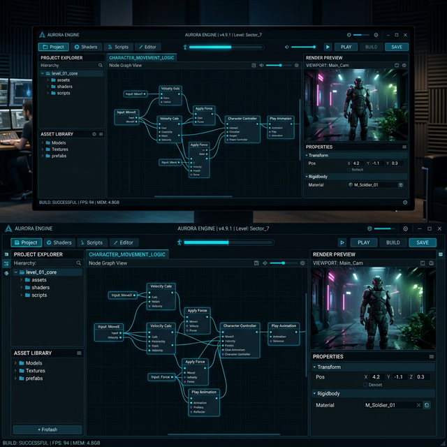
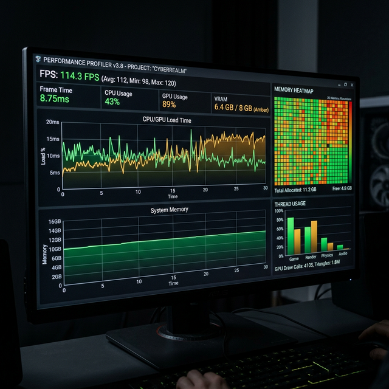
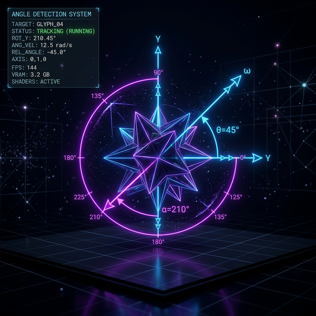
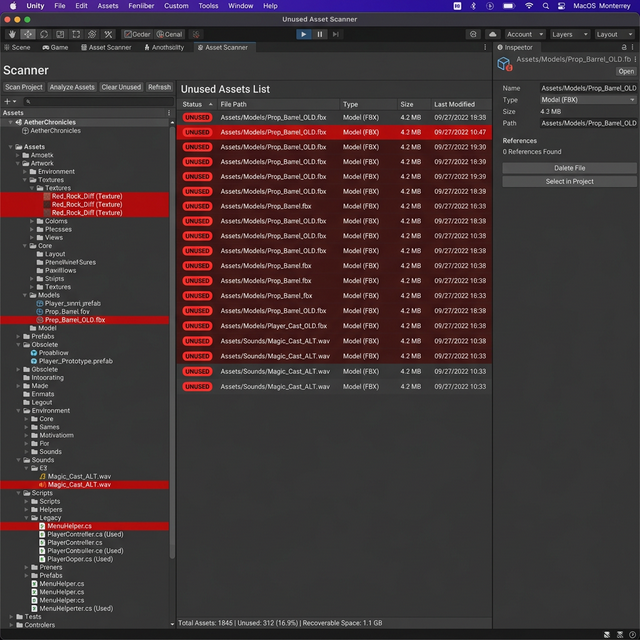

Unity, özel oyun motorları ve düşük seviyeli sistemler üzerine profesyonel düzeyde araçlar inşa ediyorum.
Bilgisayar Mühendisliği altyapımla Unity ekosisteminde araçlar ve motorlar geliştiriyorum. Archura Game Engine ile SDL üzerinde 128-tickrate sabit zaman adımlı oyun döngüsü ve değişken kare hızlı render pipeline'ı birleştirerek gerçek zamanlı simülasyonun sınırlarını keşfediyorum.

SDL2 üzerine inşa edilmiş, 128-tickrate sabit zaman adımlı oyun döngüsü ve değişken kare hızlı render pipeline'a sahip özel oyun motoru.
GitHub'da İncele
Unity projelerinde runtime'da performans darboğazlarını tespit eden analiz aracı.
GitHub'da İncele
3D uzayda obje açılarını tespit eden ve hesaplayan Unity scripti.
GitHub'da İncele
Kullanılmayan asset'leri bulup temizleyen güçlü bir araç.
GitHub'da İnceleUnity proje dosyalarını otomatik olarak temiz bir klasör yapısına düzenleyen PowerShell aracı.
GitHub'da İnceleLlama3 tabanlı, sıfır halüsinasyon hedefli hukuk asistanı.
GitHub'da İncele